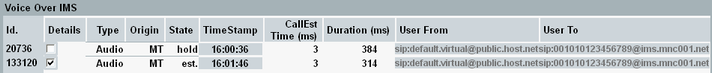
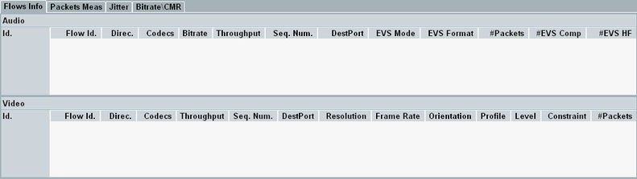
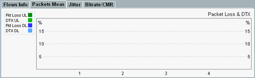
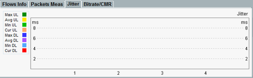
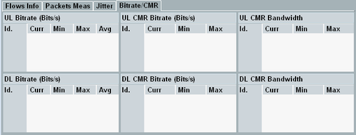

This view provides information about all voice over IMS audio or video calls that have been established via the internal IMS server since the measurement was started.
In the upper part, the view contains an overview table that lists all voice over IMS calls. The tabs in the lower part provide additional information for one or more calls, selected in the table column "Details".
The table contains one row per voice over IMS call.

- "Id.": Call ID
- "Details": Selects the calls, for which detailed information is displayed in the lower part
- "Type": Call type audio, video or emergency
- "Origin": Mobile-terminating (MT) call initiated by the DAU or mobile-originating (MO) call initiated by the DUT
- "State": One of the following call states:
– Ringing - MT call setup started, DUT is ringing – Established - call established – Released - established call has been released – Hold - call on hold - "TimeStamp": Time when the call setup was initiated (INVITE message sent/received)
- "CallEst Time (ms)": Duration of the call setup procedure (from INVITE message to first RTP packet)
- "Duration": Duration of the call (from INVITE message to BYE/Cancel)
- "User From": User ID or phone number of the calling party
For an MO call, the calling party is the DUT. For an MT call, the calling party is the DAU, simulating a calling DUT. - "User To": User ID or phone number of the called party
For an MT call, the called party is the DUT. For an MO call, the called party is the DAU, simulating a called DUT.
This tab contains a table for audio flows and a table for video flows. The listed flows are related to the calls selected in the upper part, column "Details". There is one line per flow and direction.

To hide or show the individual columns, press the hotkey "Configure Column".
- "Id.": Call ID, same value as in the upper part
- "Flow ID": ID of the flow. The same IDs are displayed in other views, for example the "IP Connectivity" view and the "Flow Throughput and Trigger" view. So you can use the flow IDs to correlate the information in different views.
- "Direc.": Flow direction, uplink or downlink
The two directions are always evaluated separately, even for a bidirectional flow. - "Codecs": Name of used codec
- "Throughput": Current audio or video data throughput at the RTP level
- "Seq. Num.": Sequence number of the currently processed packet
- "DestPort": Port used at the flow destination
- "#Packets": Number of already processed packets
- "Bitrate": Audio codec rate
- "EVS Mode": Primary mode or AMR-WB-IO mode
- "EVS Format": Header-full format or compact format
- "#EVS Comp": Number of EVS packets with compact format
- "#EVS HF": Number of EVS packets with header-full format
- "Resolution": Video resolution
- "Frame Rate": Video frame rate
- "Orientation": Counter-clockwise video rotation
- "Profile": H.264 profile, "profile_idc" (baseline, extended, main, high 10, ...)
- "Level": H.264 level (1, 1b, 1.1, ...)
- "Constraint": H.264 constraint set (set n)
This tab displays the results of packet measurements for the calls selected in the upper part, column "Details". You can display the bar graphs of up to four calls in parallel. Each X-axis label corresponds to one call.

- "Pkt Loss": Number of lost packets as percentage of the total number of packets
- "DTX": Discontinuous transmission rate, that is the number of silent packets as percentage of the total number of packets
This tab displays the jitter measured for the calls selected in the upper part, column "Details". You can display the bar graphs of up to four calls in parallel. Each X-axis label corresponds to one call.
The jitter is measured separately for the uplink and the downlink direction. The maximum, average and minimum jitters for the entire call duration are displayed. The current jitter is also displayed.

This tab displays measured bitrates and information from codec mode requests (CMR), for the calls selected in the upper part, column "Details".
You can use the view, for example, to check whether the measured bitrate matches the bitrate requested via CMR.

- "UL Bitrate": Measured uplink bitrate
- "DL Bitrate": Measured downlink bitrate
- "UL CMR Bitrate": Downlink bitrate requested via uplink CMR
- "DL CMR Bitrate": Uplink bitrate requested via downlink CMR
- "UL CMR Bandwidth": Downlink bandwidth requested via uplink CMR
- "DL CMR Bandwidth": Uplink bandwidth requested via downlink CMR
If you want to compare bitrates with requests, compare UL bitrates with DL CMR bitrates and DL bitrates with UL CMR bitrates.
- "Id.": Call ID, same value as in the upper part
- "Curr.": Current result. No result is displayed, for example, if there is no transmission or if the header contains no codec mode request.
- "Min", "Max", "Avg": Minimum, maximum and average of the measured current results for the entire call duration